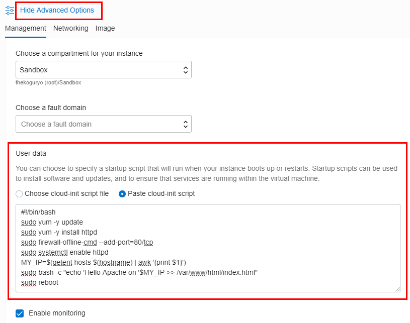

13.1 Autoscaling을 위한 준비
Autoscaling에 사용할 인스턴스 만들기
Autoscaling을 사용하려면 기준 이미지가 필요합니다. Autoscaling을 통해 서버 확장이 Apache가 설치된 인스턴스 한 대가 추가 기동 될 수 있도록, Load Balancer 장에서 사용한 Oracle Linux에 Apache가 설치된 이미지를 만들어 보겠습니다. 또한 추가 인스턴스가 실행할 최신 소스를 가져오는 방법을 고려하여 cloud-init을 사용해봅니다. 이때 추가 인스턴스임을 확인하기 쉽게 하기 위해 index.html에 생성된 호스트의 Private IP가 보이도록 합니다.
Compute Instance 생성 화면으로 이동합니다.
아래쪽 [Advanced Options] >> [Management] 클릭
User data 항목을 사용하여 인스턴스 생성시 시작할 스크립트를 설정할 수 있습니다. 여기서는 bash 스크립트를 사용하여 Apache 설치 및 index.html 생성작업을 실행합니다.
#!/bin/bash sudo yum -y update sudo yum -y install httpd sudo firewall-offline-cmd --add-port=80/tcp sudo systemctl enable httpd MY_IP=$(getent hosts $(hostname) | awk '{print $1}') sudo bash -c "echo 'Hello Apache on '$MY_IP >> /var/www/html/index.html" sudo reboot
아래쪽 Create를 클릭하여 인스턴스를 만듭니다.
cloud-init 로그
/var/log/messages 파일에서 cloud-init의 실행로그를 확인할 수 있습니다.- cloud-init 로그 예시
1193 Mar 5 06:37:13 autoscalingwebserver cloud-init: Installed:
1194 Mar 5 06:37:13 autoscalingwebserver cloud-init: httpd.x86_64 0:2.4.6-88.0.1.el7
1195 Mar 5 06:37:13 autoscalingwebserver cloud-init: Dependency Installed:
1196 Mar 5 06:37:13 autoscalingwebserver cloud-init: apr.x86_64 0:1.4.8-3.el7_4.1 apr-util.x86_64 0:1.5.2-6.0.1.el7
1197 Mar 5 06:37:13 autoscalingwebserver cloud-init: httpd-tools.x86_64 0:2.4.6-88.0.1.el7 mailcap.noarch 0:2.1.41-2.el7
1198 Mar 5 06:37:13 autoscalingwebserver cloud-init: Complete!
...
1202 Mar 5 06:37:38 autoscalingwebserver cloud-init: success
...
1206 Mar 5 06:38:03 autoscalingwebserver cloud-init: Created symlink from /etc/systemd/system/multi-user.target.wants/httpd.service to /usr/lib/systemd/system/httpd.service.
... 주의사항
cloud-init에서 앞서 Load Balancer 실습에서 사용한 firewall-cmd 구문을 그대로 사용하면 cloud-init시 다음 에러가 발생합니다. 그래서 대신 firewall-offline-cmd 구문을 사용합니다.
Mar 5 05:50:46 instance-20190305-1447 cloud-init: ERROR:dbus.proxies:Introspect error on :1.3:/org/fedoraproject/FirewallD1: dbus.exceptions.DBusException: org.freedesktop.DBus.Error.NoReply: Did not receive a reply. Possible causes include: the remote application did not send a reply, the message bus security policy blocked the reply, the reply timeout expired, or the network connection was broken.
Instance Configuration 만들기
Autoscaling시 만들어진 Instance의 구성정보를 만들기 위해 Instance Configuration이 필요합니다. 다음과 같은 순서로 만듭니다
사용할 이미지의 상세 화면으로 이동합니다.
위쪽 메뉴 중 Create Instance Configuration 클릭
Instance Configuration 이름 입력 후 Create 클릭
생성 완료
Instance Pool 만들기
Instance Pool은 Instance Configuration을 통해 만들어진 같은 구성기반의 인스턴스들의 모음입니다.
앞서 만든 Instance Configuration에서 Create Instance Pool을 클릭
Instance Pool 생성 정보
- INSTANCE POOL NAME: 원하는 이름 입력
- NUMBER OF INSTANCES: Pool 생성과 함께 시작할 인스턴스 수, 일단 1 설정
Load Balancer 설정
- 인스턴스들간의 분배를 위해 Load Balacner가 필요하므로 ATTACH A LOAD BALANCER 체크
- Load Balancer 장에서 만든 것을 그대로 사용합니다. 없으면 새로 만듭니다.
- LOAD BALANCER: 사용할 Load Balancer 선택
- BACKEND SET: Load Balancer의 분배 대상이 되어 Backend Set 선택
- PORT: 수신할 포트 입력
- Primary VNIC: Primary VNIC만 있으므로 선택
인스턴스가 만들어질 AD 지정
- 그림과 같이 Instance Pool에 의해 만들어진 인스턴스가 위치할 AD 및 서브넷 지정

- 그림과 같이 Instance Pool에 의해 만들어진 인스턴스가 위치할 AD 및 서브넷 지정
아래쪽 Create Instance Pool 클릭
Instance Pool이 만들어지고 인스턴스 1개가 만들어짐
Resource >> Load Balancer 로 이동하여 연관된 Load Balancer 클릭

LB 상세정보에서 [Resources] >> [Backend Set]으로 이동하여 Instance Pool이 사용하는 Backend Set 클릭
Backend Set에 자동으로 추가된 것을 확인할 수 있음.
브라우저를 통해 LB의 Public IP로 접속합니다.
** 이 글은 개인으로서, 개인의 시간을 할애하여 작성된 글입니다. 글의 내용에 오류가 있을 수 있으며, 글 속의 의견은 개인적인 의견입니다. **